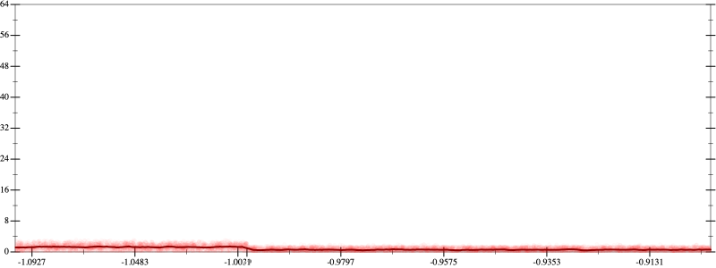
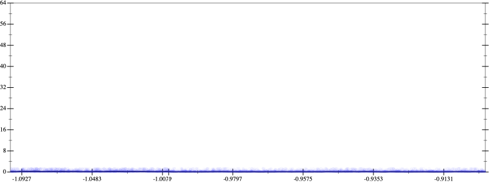
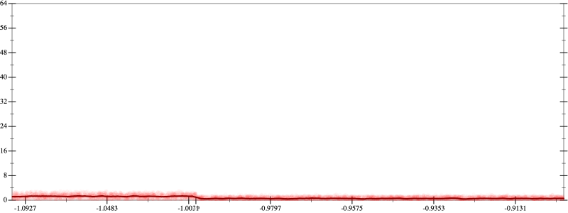
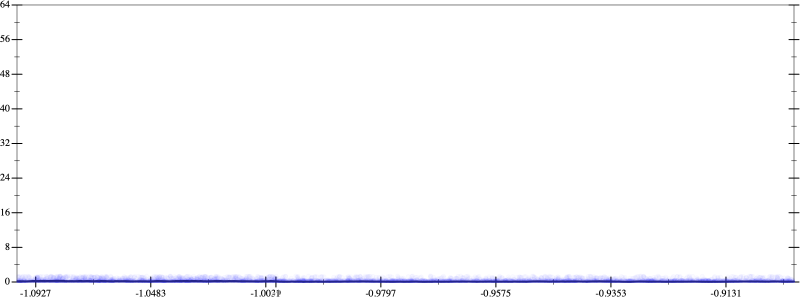

Initial program 0.8
\[-12.0 \cdot x + 8.0 \cdot \left(\left(x \cdot x\right) \cdot x\right)\]
- Using strategy
rm Applied add-log-exp0.8
\[\leadsto -12.0 \cdot x + \color{blue}{\log \left(e^{8.0 \cdot \left(\left(x \cdot x\right) \cdot x\right)}\right)}\]
Applied add-log-exp0.8
\[\leadsto \color{blue}{\log \left(e^{-12.0 \cdot x}\right)} + \log \left(e^{8.0 \cdot \left(\left(x \cdot x\right) \cdot x\right)}\right)\]
Applied sum-log0.8
\[\leadsto \color{blue}{\log \left(e^{-12.0 \cdot x} \cdot e^{8.0 \cdot \left(\left(x \cdot x\right) \cdot x\right)}\right)}\]
Applied simplify0.7
\[\leadsto \log \color{blue}{\left(e^{-12.0 \cdot x} \cdot {\left(e^{8.0}\right)}^{\left({x}^{3}\right)}\right)}\]
- Using strategy
rm Applied exp-prod0.5
\[\leadsto \log \left(\color{blue}{{\left(e^{-12.0}\right)}^{x}} \cdot {\left(e^{8.0}\right)}^{\left({x}^{3}\right)}\right)\]
- Using strategy
rm Applied cube-mult0.6
\[\leadsto \log \left({\left(e^{-12.0}\right)}^{x} \cdot {\left(e^{8.0}\right)}^{\color{blue}{\left(x \cdot \left(x \cdot x\right)\right)}}\right)\]
Applied pow-unpow0.5
\[\leadsto \log \left({\left(e^{-12.0}\right)}^{x} \cdot \color{blue}{{\left({\left(e^{8.0}\right)}^{x}\right)}^{\left(x \cdot x\right)}}\right)\]
- Using strategy
rm Applied pow-unpow0.1
\[\leadsto \log \left({\left(e^{-12.0}\right)}^{x} \cdot \color{blue}{{\left({\left({\left(e^{8.0}\right)}^{x}\right)}^{x}\right)}^{x}}\right)\]
 
